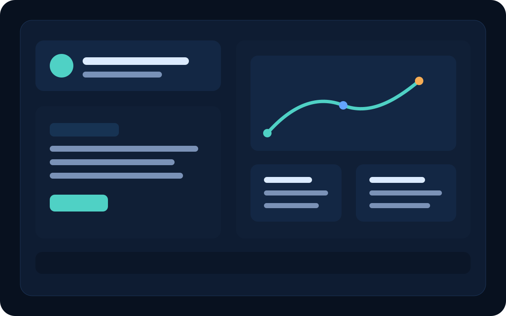

Applied AI / LLM Systems
LLM workflow and automation products
Built AI-powered application features around LLM prompting, content generation, assistant workflows, and backend orchestration. Focused on practical integration, response quality, and fast delivery into real web products rather than isolated prototypes.
- Prompt-driven workflows, inference APIs, and task automation
- Python, Node.js, OpenAI-style APIs, FastAPI, and product integrations